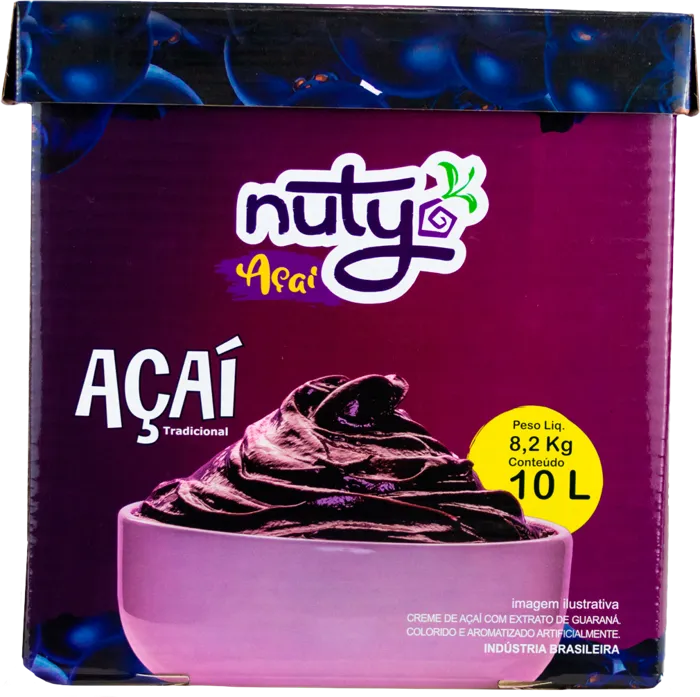
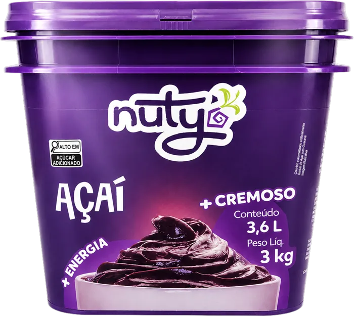
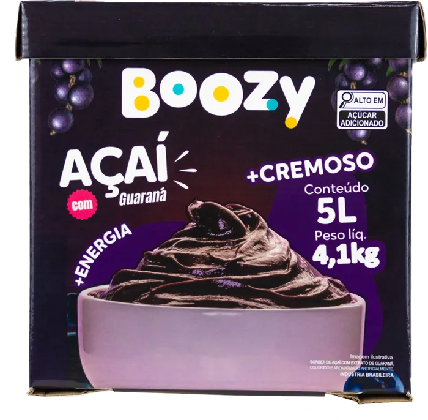
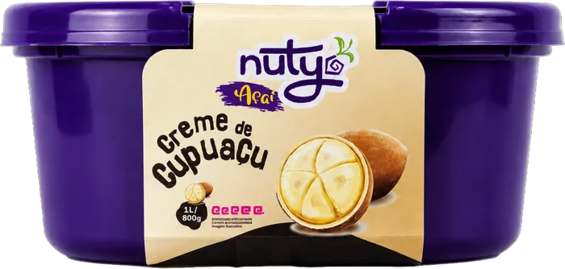
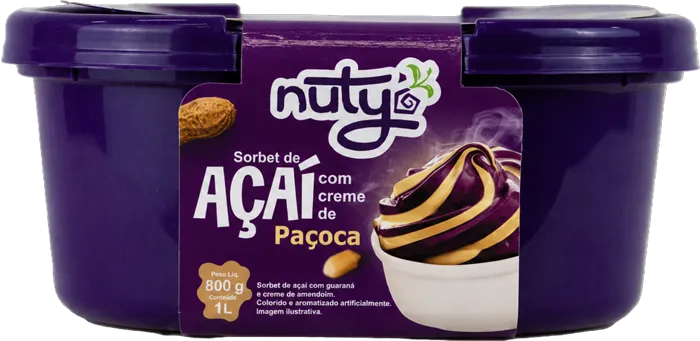
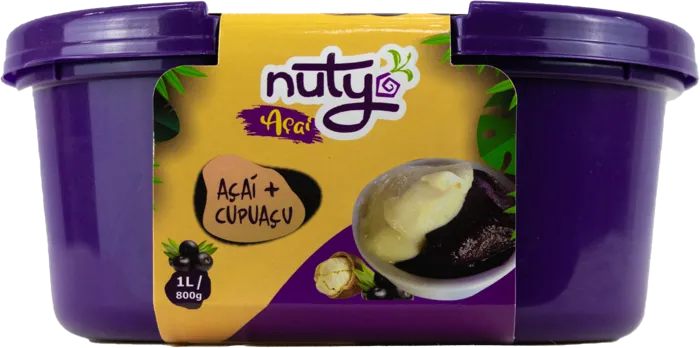
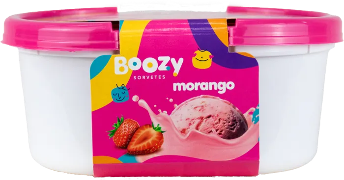
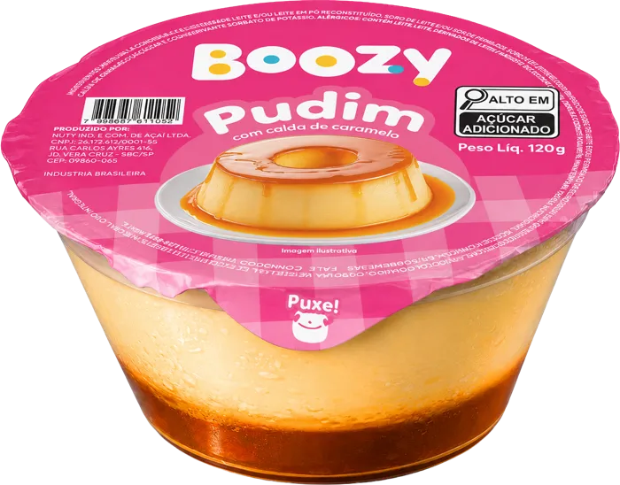

AÇAÍS & CUPUAÇU
Açaí Nuty
O clássico que combina com tudo.

Açaís, sorvetes e sobremesas para sua casa,
para compartilhar ou para o seu negócio.


Açaí de verdade. Sabor para compartilhar. Do varejo ao atacado. Manda Nuty!
Do açaí de todo dia à sobremesa do fim de semana.
Encontre seu sabor e consulte a loja.
O clássico que combina com tudo.

Mais sabor para compartilhar.

Seu toque tropical favorito.

Uma combinação irresistível.

Dois sabores, uma boa escolha.

Potes de 1 litro. Escolha seu sabor.

Um final doce para qualquer momento.
Sua pausa merece uma sobremesa.
A cremosidade do sorvete no seu dindim.
Linha prevista · sabores a confirmar.
À base de água · sabores a confirmar.
Linha prevista · sabores a confirmar.
Sabores, disponibilidade e condições de compra: consulte a unidade escolhida.

Vai abastecer seu negócio, reunir a família ou preparar um evento? Temos embalagens maiores para acompanhar seus planos.
No nosso self-service, você monta sua combinação favorita e aproveita cada colherada.
Promoção especial no self-service.
Preço, horário e condições a confirmar.Escolha sua unidade e venha para a Nuty.
Seu próximo favorito está por aqui.
VICENTE
PIRES
Açaís, sorvetes, sobremesas e self-service.
Endereço e horários aguardando confirmação.
CEILÂNDIA
FOTO DA UNIDADE A INSERIRSeus favoritos para levar, compartilhar e revender.
Endereço e horários aguardando confirmação.
Sim. O Atacadão da Nuty atende no varejo, atacarejo e atacado. Consulte os produtos e condições da unidade escolhida.
Escolha um produto, selecione tamanho ou sabor e escolha uma loja. Neste protótipo, os números de WhatsApp ainda aguardam confirmação. Os perfis oficiais das lojas estão disponíveis na seção Nossas lojas.
As condições por quantidade, pedido mínimo e necessidade de CNPJ serão confirmadas pela equipe comercial. Consulte a unidade antes de comprar.
O self-service é exclusivo da unidade Vicente Pires, que também tem promoção às quintas. As condições da promoção serão informadas pela loja.
Consulte a unidade sobre retirada e entrega. Regiões atendidas, taxas e prazos ainda precisam ser confirmados para este catálogo.